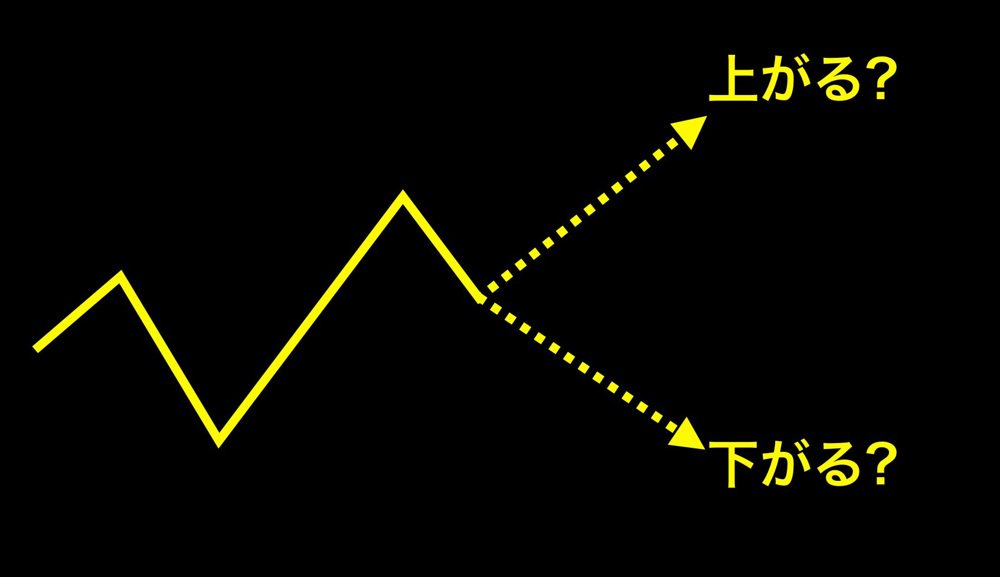
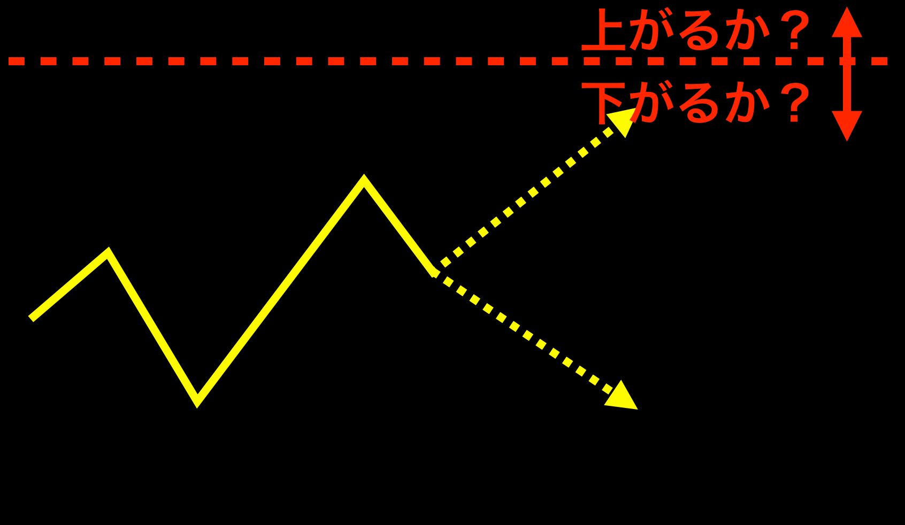
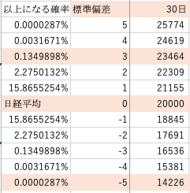

| 99.86%の確率で勝つ方法: 株式・FX・先物より有利な数学的トレードを始めよう！ | |
| 山口一生 | |
| (2019) | |
「確率５０％の株式・ＦＸ・先物などの勝つことがとても厳しい投資とは全く別の選択肢もあるんだ」と気づいてもらうきっかけになる内容になっています。確率５０％の世界とは違う選択肢を知った上で、ご自身にあったトレードを選択して負け組トレーダーから勝ち組トレーダーへと生まれ変わっていきましょう！
本書を通じて得られる未来
本書を手に取っていただき、ありがとうございます。
個人投資家の山口一生と申します。
この本は
「全く勝てない、資産も減る一方」
「値上がると思って買った株が、ずっと塩漬け状態」
「なぜか必ずエントリーした方と逆に相場が動いて損失になる」
「家族に内緒で投資・トレードを始めたので負けているのがバレたらまずい」
と、悩んでいる投資家・トレーダーの方が、
「確率５０％の株式・ＦＸ・先物などの勝つことがとても厳しい投資とは全く別の選択肢もあるんだ」と気づいてもらうきっかけになる内容になっています。
そのため、あえてつまづきやすい部分などは省略しています。
確率５０％の世界とは違う選択肢を知った上で、確率５０％のトレードが自分にはあっているのか、９９．８６％の確率で勝てるトレードが自分にはあっているのか、ご自身にあったトレードを選択して負け組トレーダーから勝ち組トレーダーへと生まれ変わっていきましょう！
すでに「日経２２５オプション」をご存知の方は一歩進んだ内容の書籍
「日経２２５オプションで資金を取り戻せ！！株 ＦＸ 先物がダメでも諦めるな！トレードで勝ちたい人が読む本： ５７ヶ月 勝率８９．５％ ５１勝５敗１分 年利２０％の目からウロコのトレード手法を伝授」 もよければご覧ください。
はじめに
改めまして、こんにちは山口です。
私は今でこそチャートも見ずに、裁量不要の方法で相場の予想もせず、ポチポチっと１日１分程度、Ｍａｃや外出時はｉＰｈｏｎｅをいじるだけで、トレードで毎月月利１０％程度稼ぐことができています。
また私を信じてついてきてくれる投資仲間には、私の手法を教えています。
当然私の手法は個人の才能が関係ない裁量不要の手法なので、手法を教えた仲間も一緒に稼いでいますし、たまに仲間同士の交流会を開いて、飲みに行ったり、美味しいものを食べに行ったり、時間や場所に縛られない生活を送っています。
ですが私は才能があって最初からトレードで稼げたわけではなく、勝ったり負けたりを繰り返す、いわゆる負け組トレーダーでした。
そんな負け組トレーダーの私が勝ち組トレーダーになれたきっかけは「日経２２５オプション」という金融商品を知ったことと、「相場の予想は無駄」という考えにたどり着いたからです。
「日経２２５オプション」はとてもマイナーな金融商品で、プロやセミプロぐらいしか存在を知らないため、「危険な金融商品だ！」なんて誤解も多いです。
ですが、「日経２２５オプション」なら今どんなにトレードで勝てない人でも稼ぐことができ、勉強や努力が報われる金融商品です。
そのため私は、「日経２２５オプション」は勤勉な日本人にはぴったりなトレード、金融商品だと思っています。
一歩先に「日経２２５オプション」に取り組んだ方からは、次のような感想をいただいております。
◆三重県の匿名希望さん「以前は携帯をチェックしないと不安でしたが、今は安心です。」
◆神奈川のＭさん「本当にすごい手法だとおもいます。お金に対する不安が軽くなりました。」
◆奈良の辻本さん「堅実に稼いでいける手法をありがとうございます！」
◆三重の永尾さん「ほぼ含み益状態でトレードに安心感があります。」
◆京都のＨさん「ルール通りするだけで、すごく高度な手法が簡単にできます。」
◆新潟のＭさん「今までの損失を取り戻せそうです！！」
もっとたくさん感想をいただいているのですが、あまりにも多いのでごく一部をこちらのページにまとめてありますので、もっと詳しく感想を見たい方はこちらをご覧ください。
感想をいただいた方たちのように、勝ち組トレーダーになりたいのなら今すぐ「日経２２５オプション」取引を始めましょう！
次の章からは、他の金融商品と日経２２５オプションの違いなどをご紹介していきます。
第１章 丁半博打の世界
副業解禁、年金崩壊、国も年金に頼らず自助努力をお願いする時代です。
自分で運用しなければ老後資金がない時代になってきました。
そんな中多くの人が投資やトレードで運用する場合、株式投資や投資信託、ＦＸなどの上がるか下がるかを当てる金融商品に最初に手を出します。
買った銘柄が上がれば利益になり、下がれば損を出す。
つまり上がると予想すれば「買い」、下がると予想すれば「売り」をして、予想が当たればお金が増えるわけです。
とても簡単な仕組みでわかりやすいですよね。
ですので多くの方が最初は、根拠のない期待感や、適当な値ごろ感で銘柄などを選びじりじりと資金が減っていくという状況に陥ってしまいます。
このように、上がるか下がるかの確率５０％の予想を当てればいいだけなのですが、９０％近くのトレーダー、投資家は負けていると言われています。
第２章 ファンダメンタルズ・テクニカル分析は無駄
そして多くのトレーダー、投資家が「上か」「下か」の確率５０％の精度を上げようと、ファンダメンタルズやテクニカル分析、株の場合は会社四季報やＰＥＲ、ＰＢＲ、ＲＯＥなど研究してなんとか予想を当てようとします。
ところが、テクニカル的には「売られ過ぎ」のままずっと下がり続ける銘柄、資産的に割高とされる銘柄でもずっと上がり続ける銘柄もざらにあるわけです。
またいくら予想したり分析しても、どこかの大統領がＳＮＳで何か呟くだけで、相場が暴落したりするわけです。
こんなのは、いくらチャート分析やファンダメンタルズを分析しても分かるはずがありません。
所詮後追い、後付けの解釈なのです。
第３章 確率５０％ではない世界
このように、上がるか下がるか２択しかない、株式、ＦＸ、先物などの金融商品しかないのかというと、違って「オプション取引」というものが存在します。
オプション取引は、デリバティブとか権利の売買とか難しいことが言われますが、本書ではもっと簡単に、オプション取引は株式や、ＦＸ、先物とどう違うのか簡単に紹介していこうと思います。
まずオプションにはコールトプットがあるのですが、ここでつまずいてしまう方も多いので、コールだけで話をしていこうと思います。
まず、コールという銘柄は日経平均が上がると値上がりし、下がると値下がりするものだと考えてください。
つまり日経平均が上がると思えば「買い」日経平均が下がると思えば「売り」をすれば儲かるわけです。
株やＦＸなどの他の金融商品は、以下の図のように今の時点の価格よりも「上がる」か「下がる」かを予想していました。

ところがオプションの場合は、日経平均が何円以上になるか、何円以上にはならないかを予想してコールを売ったり買ったりするのです。

具体的には、現在日経平均が２００００円だとします。
日経２２５先物の場合は、現在の２００００円よりも上がると思えば買い、下がると思えば売りをして、予想が当たれば利益になります。
日経２２５オプションの場合は現在の２００００円は関係なく、期日（ＳＱ、第二金曜日）に日経平均が２８０００円より上がると思えば、コール２８０００円を買う、期日（ＳＱ、第二金曜日）に日経平均が２８０００円より下がると思えば、コール２８０００円を売る、ということをします。
どうでしょう？
今の２００００円の価格より上がるか下がるかはなかなか予想できなくても、今より８０００円高くなるかどうかだと、かなり予想も当たりそうじゃないですか？
こういうことができるのが日経２２５オプション取引になります。
もちろん他にも相場の予想をしない戦略など、いろんな戦略を取ることができるのも日経２２５オプションの奥深いところです。
そして当たる確率も、５０％じゃないこともなんとなくわかってもらえるのではないでしょうか？
第４章 日経２２５オプションの確率
では日経２２５オプションはどれぐらいの確率なのかというと、買いと売りでは当たる確率が変わります。
ボラティリティや標準偏差、正規分布などを使って計算するのですが、難しそうですよね。
標準偏差はボリンジャーバンドと言われるテクニカル分析に使われています。
ボリンジャーバンドはトレードしたことある方なら一度は目にしたことがあるんじゃないでしょうか？
１σと－１σの間になる確率は６８．２％だよ、２σと－２σの間になる確率は９５．４％だよ。
といった感じのテクニカル分析です。
このような標準偏差を使うと３０日後に〇〇円以上になる確率というのが次のように計算できるんです。

図の見方は、今現在日経平均が２００００円の時に、３０日後２３４６４円以上になる確率は０．１３４９８９８％ということです。
逆に日経平均が３０日後に２３４６４円未満になる確率は９９．８６５０１０２％ということになります。
つまり、コール２３４６４円という期日まで３０日ある銘柄があったとしたら、コール２３４６４円の買いは０．１３４９８９８％の確率、コール２３４６４円の売りは９９．８６５０１０２％の確率で勝つことができるということになります。
第５章 日経２２５オプションと他の金融商品の比較
難しい計算式とかは置いといて、株やＦＸなどの金融商品は、今現在から上がるか下がるかの確率は５０％です。
ところが日経２２５オプションは前の例のコールの買いは０．１３４９８９８％の確率、コールの売りは９９．８６５０１０２％の確率になるのです。
どうでしょうか？
９９％以上の確率で勝てる銘柄が世の中には存在しているんです。
株やＦＸ、先物などの確率５０％の丁半博打とは全く違う世界が日経２２５オプション取引には常に存在しています。
聡明な方なら何か希望、優位性のようなものを感じるのではないでしょうか？
もちろん、高い勝率に伴うリスクもありますので、
「そうか、コールの売りをすればいいんだ！」
と、よくわかっていないのにコールの売りをしないでくださいね。
すぐに行動に移そうとされる行動力、マインドは素晴しいですが、リスクをどのように軽減して、より安全にするには、どうすればいいのか等考えていく必要があります。
このようなことを考えるのは、奥が深く面白い部分でもあります。
このように、
・株やＦＸ、先物のように、上下を当てるだけの仕組みが簡単でとっつきやすいけど、なかなか勝てない難しい投資、トレード
・日経２２５オプション取引のように、仕組みが複雑でとっつきにくいけど、勝率に偏りがあって簡単に勝てる投資、トレード
が存在しているんです。
確率５０％の投資しか知らなかった方には、何か気付きや可能性が感じられたのではないでしょうか？
第６章 さらに日経２２５オプションを知りたくなった方へ
「確率５０％とは違う世界があるんだ。」
「日経２２５オプションについてもっと知りたいな。」
「もっと勉強して勝ち組トレーダーになりたい！」
と、日経２２５オプションに興味を持ってくれた方は、動画１００本超の９時間以上のコンテンツで、できるだけわかりやすい言葉で、オプションの基礎から、かなり深い部分まで解説している、こちらの無料の「０から始めるオプショントレーダー養成講座ＯＰＴＩＯＮＥＡ（オプショネア）」 をご覧ください。
からかなり深い部分まで解説しています。
あとがき
最後までご覧いただき、本当にありがとうございます。
はじめにでも書きましたが、私は今でこそチャートも見ずに、裁量不要の日経２２５オプションの方法で相場の予想もせず、ポチポチっと１日１分程度、Ｍａｃや外出時はｉＰｈｏｎｅをいじるだけで、トレードで毎月月利５から１０％程度稼ぐことができています。
また私を信じてついてきてくれた投資仲間には、私の手法を教えて一緒に稼げるようにもなりました。
仲間同士の交流会を開いて、飲みに行ったり、美味しいものを食べに行ったり、時間や場所に縛られない生活を送っています。
ですが、私も全く勝てない時期が長い期間ありましたし、いろんな投資塾や情報商材、手法や金融商品を試してきました。
そしてようやく「日経２２５オプション」にたどり着けました。
本書を手に取っていただいたあなたには、私のような遠回りをせずに「日経２２５オプション」を使って勝ち組トレーダーになって欲しいと心から願っております。
長くなりましたが、本書を手に取っていただいてありがとうございます。
そして最後までご覧いただきありがとうございました。
山口一生
「さらにオプションを学びたいな」
「オプションに興味を持ったよ」
という方は、是非無料の「０から始めるオプショントレーダー養成講座ＯＰＴＩＯＮＥＡ（オプショネア）」 に登録して勉強して一緒に稼いでいきましょう！
ＯＰＴＩＯＮＥＡ（オプショネア） であなたにお会いできるのを楽しみにしています。
またＫｉｎｄｌｅにて一歩進んだ内容の書籍
「日経２２５オプションで資金を取り戻せ！！株 ＦＸ 先物がダメでも諦めるな！トレードで勝ちたい人が読む本： ５７ヶ月 勝率８９．５％ ５１勝５敗１分 年利２０％の目からウロコのトレード手法を伝授」 もよければご覧ください。
【著作権について】
「数学的トレード９９．８６%の確率で勝つ方法」（以下、本書と表記）は、著作権法で保護されている著作物です。本書の使用に関して、以下の点をご注意ください。
本書の著作権は、山口一生にあります
そのため、山口一生の書面による事前許可なく、本書の一部、または全部をあらゆる貯蓄手段（印刷物、電子ファイルなど）により、複製、流用および転売（オークション含む） することを禁じます。